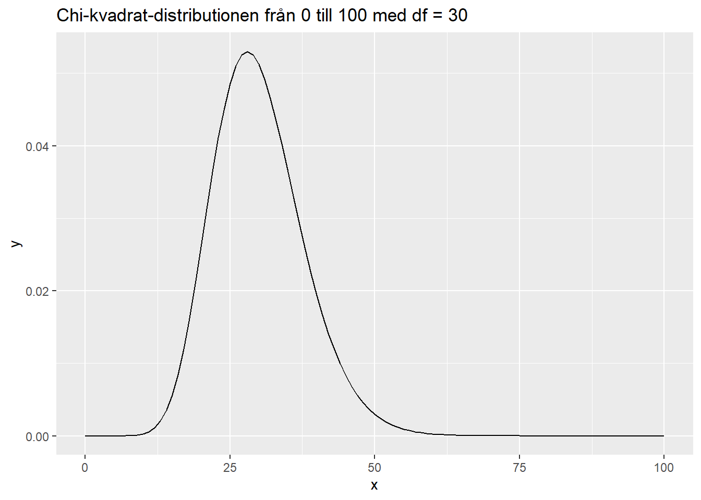
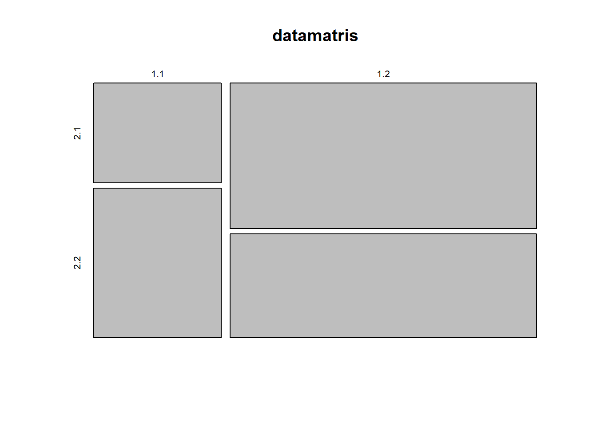
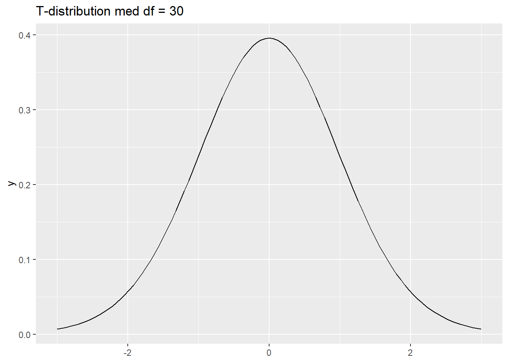
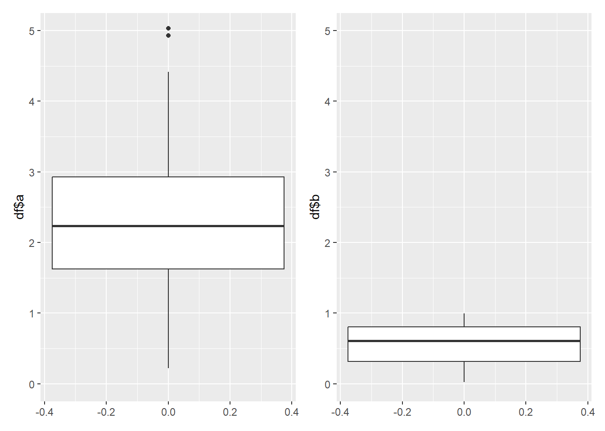

Registered S3 method overwritten by 'DescTools':
method from
reorder.factor gdata12 Bivariat analys
Du behöver följande paket:
stats: R:s inbyggda statistikpaket.
gmodels: Paket för generella lineära modeller.
DescTools: Paket för deskriptiva mått och bivariat analys.
ggplot2: Paket för att generera grafik.
Detta kapitel handlar om de första sambandsanalyserna du kommer att göra: bivariata analyser, med en beroende variabel och en oberoende variabel. Analysmetoderna är uppdelade enligt skalenivåer. Först kommer korstabuleringen, som kan utföras på två nominalvariabler. Sedan är det dags för ordningstesten, vilka fungerar på ordinalskalenivå. Efter det inleder vi variansanalysen med enkel ANOVA, vilken har en beroende variabel på intervall- eller kvotskala och en oberoende variabel på nominal- eller ordinalskala. T-testet är ett likadant, men något enklare, test som likväl utförs på kvantitativa beroende variabler, men med en binär oberoende variabel. Till sist introduceras korrelationsanalysen, som kräver intervall- eller kvotvariabler i bägge position.
12.1 Korstabulering
Du har tidigare blivit bekant med frekvenstabeller i denna bok. En frekvenstabell, för att påminna, är en tabell som innehåller information på hur många analysobjekt har fått ett visst värde på variabeln i fråga. Frekvenstabeller är därmed univariata metoder, eftersom de presenterar information på en variabel.
Korstabellen (eng. crosstabulation eller förkortat crosstab) är en bivariat version av detta. Istället för att lägga variabelnivåerna i raderna och frekvensen i kolumnerna, lägger vi den beroende variabeln i raderna och den oberoende variabeln i kolumnerna1.
1 Egentligen är ordningen arbiträr, du kan likväl ha beroende i kolumnerna och oberoende i raderna. Av konvention brukar man följa ordningen jag nämner, men gör hur du vill - så länge du säger tydligt vad du menar.
Idén med korstabellen är att vi kan granska enskilda frekvenser för vissa kategorier, och därmed se eventuella skillnader i beroende variabelns grad enligt oberoende variabel. Ser vi skillnader så tyder det på att det finns ett förhållande mellan beroende och oberoende variablerna. Om vi inte ser någon skillnad, så finns det troligen inte ett förhållande (men glöm inte elaborering!).
I R kan du utföra en korstabulering med funktionen stats::xtabs(formula, data). Funktionen tar två obligatoriska argument: formula beskriver vad som ska korstabuleras, och data beskriver varifrån data ska hämtas. Funktionen returnerar en korstabell:
korstabell <- xtabs(~alcgp + tobgp, data = esoph)
korstabell tobgp
alcgp 0-9g/day 10-19 20-29 30+
0-39g/day 6 6 5 6
40-79 6 6 6 5
80-119 6 6 4 5
120+ 6 6 5 4[BYT TILL BÄTTRE EXEMPEL]
Vi kan se en tabell med två variabler: alcgp i raderna, vilket står för gram av alkohol per dag, och tobgp, vilket står för gram av tobak per dag. Om vi granskar cellerna så tycks det inte finnas ett förhållande mellan alkoholkonsumption och tobakskonsumption i vårt data: alla celler har ungefär lika stora värden i sig.
12.1.1 Chi-kvadrat-testet: \(\chi^2\)
Chi2-kvadrat-testet är ett osäkerhetstest för korstabeller. Vi kan använda chi-kvadrat-testet för att undersöka huruvida våra observerade cellvärden (vårt data) motsvarar vad vi skulle förvänta oss under nollhypotesen. I detta fall är nollhypotesen att det inte finns ett förhållande mellan de två variablerna i korstabellen.
2 Uttalas [\(k^h\)i:], med hårt K-ljud
\(\chi^2\)-testet kan förstås som en generell lineär modell (GLM). Detta betyder att den gör samma sak som alla andra modeller: \(\text{Utsaga} = \text{Modell} + \text{Felvärde}\). De facto räknar \(\chi^2\) faktiskt avvikelsens kvadratsumma (se kapitel XXX), men med en liten modifikation:
\[\chi^2 = \sum_{i=1}^{n}\frac{(\text{observerat}_i-\text{modell}_i)^2}{\text{modell}_i} \] I människospråk: \(\chi^2\) räknar kvadratskillnaden mellan det observerade cellvärdet och det förväntande cellvärdet, och dividerar detta med det förväntade cellvärdet. Sedan räknar den summan av alla dessa beräkningar för varje cellvärde. Slutresultatet är ett värde, \(\chi^2\), som återspeglas i en \(\chi^2\)-fördelning:

Hur räknas dessa skillnader? \(\chi^2\) inleder med att räkna en modell för varje kombination av beroende och oberoende variablernas kategorier i korstabellen. Om vi t.ex. har två binära variabler, så summerar \(\chi^2\) följande modeller: \(\text{modell}_{00}\), \(\text{modell}_{01}\), \(\text{modell}_{10}\) och \(\text{modell}_{11}\). Modellen räknas alltid ut genom att multiplicera radsumman för första variabeln med kolumnsumman för andra variabeln, och dividera resultatet med totala mängden observationer i datamaterialet \(n\).
För att exemplifiera detta kan vi ställa upp en kontingenstabell med påhittade siffror:
datamatris <- matrix(c(2, 7, 3, 5), nrow = 2)
datamatris [,1] [,2]
[1,] 2 3
[2,] 7 5Med snabb huvudmatte kan vi räkna att vi har totalt \(n = 2+3+7+5 = 17\) observationer. Sedan räknar vi rad- och kolumnsummorna för varje kombination:
\[\text{modell}_{11} = \frac{(2+3) * (2+7)}{17} = 2.647, \\ \text{modell}_{12} = \frac{(2+3) * (3+5)}{17} = 2.353, \\ \text{modell}_{21} = \frac{(7+5) * (2+7)}{17} = 6.353, \\ \text{modell}_{22} = \frac{(7+5) * (3+5)}{17} = 1.176\]
Efter detta slår vi in våra modellvärden i den slutliga formeln för \(\chi^2\):
\[\begin{equation} \begin{split} \chi^2 & = \sum_{i=1}^{n}\frac{(\text{observerat}_i-\text{modell}_i)^2}{\text{modell}_i} \\ & = \frac{(2-2.647)^2}{2.647} + \frac{(3-2.353)^2}{2.353} + \frac{(7-6.353)^2}{6.353} + \frac{(5-1.176)^2}{1.176} \\ & = 0.158 + 0.178 + 0.066 + 12.435 \\ & = 12.837 \end{split} \end{equation}\]
\(\chi^2\)-testet har en frihetsgrad enligt följande formel: \(df = (r-1)(k-1)\), alltså mängden av rader minus ett multiplicerat med mängden av kolumner minus ett. Du kan även tänka dig formeln som mängden av kategorier i beroende variabeln, minus ett, multiplicerat med mängden av kategorier i oberoende variabeln, minus ett.
För vår exempelberäkning är \(df = (2-1)(2-1) = 1*1 = 1\).
Det slutliga värdet på \(\chi^2\) varierar mellan 0-1. Testets storlek följer en \(\chi^2\)-distribution (det var ju förvånande, det), så vi kan använda teststorleken för att få ett p-värde för nollhypotesen. De flesta \(\chi^2\)-testfunktioner producerar detta p-värde färdigt, men om du inte har tillgång till p-värdet så kan du hämta ett värde med distributionsfunktionen stats::pchisq(q, df), där argumentet q är värdet och df är frihetsgraden.
Vår beräkning ovan ger följande resultat:
pchisq(12.837, df = 2)[1] 0.9983689I R kan du utföra ett \(\chi^2\)-test på två olika sätt. Om du har en färdig korstabell kan du kalla base::summary()-funktionen på den, vilket producerar testet:
summary(korstabell)Call: xtabs(formula = ~alcgp + tobgp, data = esoph)
Number of cases in table: 88
Number of factors: 2
Test for independence of all factors:
Chisq = 0.6195, df = 9, p-value = 0.9999
Chi-squared approximation may be incorrectDu kan även kalla funktionen stats::chisq.test() på tabellen, vilket utför samma sak. Med denna kan du dock få ytterligare information om testet, vilket kan hjälpa dig undersöka robustheten:
chi.kvadrat = chisq.test(korstabell)Warning in chisq.test(korstabell): Chi-squared approximation may be incorrectIbland kan R kasta en varning i stilen av att “chi-kvadrat-approximeringen kan vara inkorrekt”. För summary()-funktionen står detta i output-texten. Detta innebär att en eller flera av de förväntande cellvärden underskrider 5, vilket brukar tas som en gräns för att lita på \(\chi^2\)-testets robusthet. Du kan granska huruvida detta är sant genom att se på chisq.test(data)$expected (alla cellvärden borde vara större än 5):
chi.kvadrat$expected tobgp
alcgp 0-9g/day 10-19 20-29 30+
0-39g/day 6.272727 6.272727 5.227273 5.227273
40-79 6.272727 6.272727 5.227273 5.227273
80-119 5.727273 5.727273 4.772727 4.772727
120+ 5.727273 5.727273 4.772727 4.772727Förväntande värden under fem?
Om du har problem med för låga förväntande värden, borde du i första hand samla mera data eller godkänna ditt öde. Det finns dock ett antal andra test som kan utföras på sådana datafördelningar.
- Fishers exakta test fungerar på 2x2-tabeller, alltså korstabeller där bägge variabel är binär. Testet kan även räknas på större tabeller, men var förberedd på långa kalkylationstider. Använd funktionen
stats::fisher.test(data). - Likelihood ratio fungerar som \(\chi^2\)-testet, men är robust för små urvalsstorlekar, alltså situationer där du kan finna förväntade cellfrekvenser under fem. R har ingen funktion för att kalkylera likelihood ratio för en korstabell. [LETA REDA PÅ EN!]
- Cramérs V-test fungerar lite annorlunda än de andra testen, eftersom det ger en direkt effektstorlek. V varierar mellan 0-1 och är jämförbar med traditionella korrelationskoefficienter (mera om dem senare). Detta gör V-testet till ett mycket användbart test, och det är faktiskt att föredra att rapportera V om du vill jämföra effektstorleken med effekten i ett test som inte härstammar från en korstabell. Om du vill jämföra mellan korstabeller kan du alltid jämföra procentuella förändringar. Använd funktionen
DescTools::CramerV(data). Du kan även hämta bootstrap-konfidensintervall för V med argumentetconf.level=x, därxär din konfidensnivå (t.ex. 0.95). Notera att detta kan ta en stund!
För visualisering av korstabeller kan vi förstås trycka själva tabellen, och detta är ett standardiserat sätt att uttrycka resultaten. Däremot kan vi även ställa upp resultaten grafiskt, med hjälp av en mosaikgraf. Mosaikgrafen uttrycker korstabellens frekvenser som en tvådimensionell “låda”. Du kan generera en mosaikgraf med funktionen graphics::mosaicplot(data):
mosaicplot(datamatris)
Från grafen syns de relativa frekvenserna av varje kategori för rader och kolumner. Ta till exempel rad 1, kolumn 1 (cell 1.1): den tycks stå för ungefär en tredjedel av alla observationer på rad 1, och två femtedelar eller så av alla observationer i kolumn 1. Vi kan använda grafen för att få en snabb syn på huruvida vi tror att den oberoende variabeln (kolumnerna) är relaterad till den beroende variabeln (raderna). I vårt fall kunde det kanske ha varit så, eftersom cellstorlekarna är väldigt annorlunda (vilket innebär olika relativa frekvenser inom kategorierna), men vårt \(\chi^2\)-test föreslog redan att detta trots allt inte var fallet.
Eftersom vårt \(\chi^2\) uppvisade problem med de förväntade cellerna, kan vi använda Fishers exakta test för att få robusta resultat. Trots att testet är gjort för 2x2-tabeller går det att göra på större tabeller än så, och i vårt fall är analysen ännu någorlunda snabb:
fisher.test(datamatris)
Fisher's Exact Test for Count Data
data: datamatris
p-value = 0.6199
alternative hypothesis: true odds ratio is not equal to 1
95 percent confidence interval:
0.03039342 6.17614082
sample estimates:
odds ratio
0.4978506 P-värdet är 0.6199, vilket är högre än en rimlig alfatröskel (t.ex. \(\alpha = 0.05\)), så vi kan inte förkasta nollhypotesen. Med andra ord: ett testvärde på detta (0.498) eller större är 62 % sannolikt om det riktiga testvärdet vore 13. Vår grafiska intution skulle ha fört oss fel!
3 I detta fall testar vi odds ratio, vars “nolläge” är 1 istället för 0. För mera information, se kapitel XXX.
Funktioner:
xtabs(formula, data): Skapar en korstabell. Argumentetformulatar en formel på vad som ska korstabuleras, ochdatatar en mångdimensionell datastruktur. Formeln kan innehålla andra kontroller, se hjälpfunktionen?xtabsför mer information.pchisq(värde, df): Returnerar p-värdet för ett värde på \(chi^2\) med frihetsgradendf. Märk, att funktionen inte beaktar om kraven för \(\chi^2\) har uppfyllts!chisq.test(data): Utför ett \(\chi^2\)-test pådata. Returnerar många olika statistiker, varav$expectedär nyttig för att granska att alla förväntade cellvärden är över fem.fisher.test(data): Utför Fishers exakta test pådata.CramerV(data): Räknar Cramérs V-test fördata. För konfidensintervall, ge argumentetconf.level = x, därxär din konfidensnivå (t.ex. 0.95). Märk att beräkningen kan haka sig fast ibland, p.g.a. bootstrapping.mosaicplot(data): Ritar en mosaikgraf pådata. Användbar för att snabbt granska huruvida korstabellen kunde vara värd att undersöka.
12.2 Students T-test
Korstabeller fungerar mycket bra för bivariata förhållanden mellan två kvalitativa variabler, men vad gör vi när ena variablen är kvantitativ? Svaret beror på vilken av våra variabler. Om vår beroende variabel är kvantitativ, men vår oberoende variabel är kvalitativ, så använder vi t-testet. Om situationen är tvärtemot, använder vi logistisk regression (vilket förklaras i samband med multivariata analyser).
Students t-test är skapat av statistikern William Sealy Gosset (1876-1937). Namnet kommer från att Gosset publicerade under pseudonymen “Student”, och termen “t-test” är egentligen lite fel: Gosset kallade testet för “t-statistiken”, vilket stod för “hypotesteststatistiken”. Vi fortsätter kalla det t-testet, eftersom namnet är välkänt, men märk att förkortningen då står för “hypotestesttestet”.
T-testet mäter huruvida en skillnad kan anses vara tillräckligt stor för att den inte kunde orsakas under en nollhypotes - därför namnet “hypotestestet”. Vad denna skillnad är, och vilken nollhypotes som testas, beror på situationen. Vi kan tala om t-test för enkla urval och t-test för dubbla urval (eng. one- and two-sample t-tests).
Oavsett urvalsform följer t-testet en t-fördelning:

Som du märker är t-fördelningen väldigt lik normalfördelningen. Den största skillnaden är att t-fördelningen har större svansar, alltså är den lite mera sensitiv för extrema värden.
På grund av att t-testet följer en fördelning, kan vi hämta sannolikhetsvärden för att en skillnad ger ett visst testvärde. För att göra detta bör vi även bestämma om vi testar två- eller ensidigt. Ett ensidigt t-test räknar ut sannolikheten att värdet är antingen större än, eller mindre än, det förväntade värdet. Du måste välja vilkendera du förväntar dig. Ett tvåsidigt t-test, å andra sidan, räknar ut sannolikheten att värdet skiljer sig från det förväntade värdet, oavsett vilken riktning. Dessa är något olika alternativa hypoteser, och påverkar tröskelvärdet för t-statistiken. Välj därför rätt!
12.2.1 T-test för enkla urval
Om vi testar skillnaden mellan ett urval och det förväntade populationsvärdet, talar vi om ett t-test för ett urval (eng. one-sample t-test). Då beräknas t-testet så här:
\[\begin{equation} \text{t} = \frac{\bar{x} - \mu}{\text{SD}/\sqrt{n}} \end{equation}\]
och i vanligt språk: t-statistiken är lika med det mätta medeltalet subtraherat med populationsmedeltalet, dividerat med standardavvikelsen dividerad med kvadratroten av urvalsstorleken.
Vi kan använda t-testet för enkla urval för att beräkna huruvida ett mätt medeltal är så pass mycket större (eller mindre) än något förväntat värde, att vi kan förkasta nollhypotesen att värdet är det förväntade värdet. Kom ihåg att välja om du vill testa för riktning (ensidigt) eller bara skillnad (tvåsidigt).
Ett t-test för enkla urval kan utföras enkelt (ha!) i R med funktionen t.test():
t.test(x,
y,
alternative = c("two-sided", "less", "greater"),
mu = 0,
paired = FALSE,
var.equal = FALSE,
conf.level = 0.95,
...)Argumentet x står för de data du vill testa. y är inte nödvändigt för t-test för enkla urval, men skulle användas för att testa skillnaden med andra data. alternative används för att bestämma hurudant test du gör: “two-sided” för tvåsidat test, “less” eller “greater” för ensidade test, antingen lägre än gränsvärdet eller högre än gränsvärdet. Med argumentet mu kan du ändra på vad nollhypotesen är; ofta testar du mot noll, men du kan byta det till vilken siffra som helst (enligt vad en logisk nollhypotes är för ditt syfte). paired används för att göra ett parat t-test - mer om detta senare. Argumentet var.equal bestämmer huruvida du gör ett test som är robust för variansheterogenitet eller inte. Till sist, conf.level bestämmer vilken konfidensnivå du vill använda. 0.95 motsvarar \(\alpha = 0.05\), men du kan ändra konfidensnivån enligt behov.
Vi kan göra ett exempel. Säg att vi har mätt en massa data och vill veta om medeltalet på detta data skiljer sig statistiskt från 0, oavsett riktning. Eftersom vi inte är intresserade av riktning är det fråga om ett tvåsidigt test, och eftersom vi testar emot noll behöver vi inte ändra på mu-argumentet. Konfidensnivån håller vi på den vanliga 0.95-nivån, så vi behöver inte ändra på den heller.
testdata <- rnorm(100, mean = 2.5)
t.test(testdata)
One Sample t-test
data: testdata
t = 22.175, df = 99, p-value < 2.2e-16
alternative hypothesis: true mean is not equal to 0
95 percent confidence interval:
2.189935 2.620354
sample estimates:
mean of x
2.405145 Märk att jag inte behövde ge några som helst argument, förutom mitt data, åt t.test(). Detta är eftersom vi använde alla standardargument - vi gjorde tvåsidigt test mot nollhypotesen att värdet är 0, och vi bad om p-värde enligt konfidensnivån 0.95.
Testresultatet berättar åt oss att det är frågan om ett T-test för enkelt urval (se rubriken). Vi får även veta våra storlekar: \(\text{t} = 27.131, \text{df} = 99, \text{p} = 2.2 * 10^{-16}\). Testet berättar åt oss även det testade medeltalet, \(\hat{x} = 2.60\), samt dess konfidensintervall på 0.95-nivån, \(\text{95% CI} = [2.41;2.80]\). Därutöver säger den vad vi testade emot (“true mean is not equal to 0”), ifall vi lyckas glömma det.
Varför finns det bokstäver i mitt p-värde?!
När vi jobbar med siffror hamnar vi ofta jobba med väldigt stora eller väldigt små siffror. Tänk dig att du ofta skulle jobba med siffror i miljardstorleken eller större (t.ex. statliga ekonomier eller hjärnceller). Det skulle bli väldigt svårt om din text är pepprad med siffror så som 1 000 000 000, 26 583 397 236 och 236 347 000.
För att underlätta läsningen använder vetenskapsidkare ofta vetenskaplig notation av siffror. Exempel siffrorna ovan kan skrivas på två sätt med vetenskaplig notation:
- \(1.0 * 10^9, 26.5 * 10^9, 0.2*10^9\)
- \(1.0\text{e}9, 26.5\text{e}9, 0.2\text{e}9\)
Detta förkortar siffrorna till en liten siffra, gånger en potens av tio. Du kan läsa dem som att potensstorleken (9 i exemplet) berättar åt dig hur många steg åt vänster du ska skuffa decimaltecknet. För att komma från 1.0 till en miljard ska du skuffa decimaltecknet 9 steg åt vänster, och lägga till nollor anefter. Bokstaven “e” i andra exemplet kan avläsas som “exponent”, alltså en förkortning för “tio upphöjt i…”
En annan vanlig situation där du bemöter vetenskaplig notation är med p-värden, eftersom de blir otroligt små. Samma sak gäller här, förutom att ett negativt tecken används för att påvisa att siffran är mindre än 1. Därmed är \(0.05\) samma sak som \(5*10^{-2}\), och \(0.000000635\) samma sak som \(6.3 * 10^{-7}\). Skuffa decimaltecknet åt höger istället för åt vänster.
Det kan vara nyttigt att lära dig några vanliga tröskelvärden i vetenskaplig notation:
- \(p = 0.05 = 5*10^{-2}\)
- \(p = 0.01 = 1*10^{-2}\)
- \(p = 0.001 = 1*10^{-3}\)
12.2.2 T-test för dubbla urval
Vi kan även använda t-testet för att testa skillnaden mellan två grupper i vårt urval. Detta kallas för ett t-test för dubbla urval, men trots namnet behöver du inte ha två separata urval. Vad testet gör är att det egentligen testar om de två grupperna härstammar från samma population. Detta gör att vi kan testa avsaknaden av olikhet4 mellan dessa två grupper.
4 Se nedan för likhetstestning för att förstå varför avsaknaden av olikhet inte är detsamma som likhet.
T-testet för dubbla urval ser ut på detta vis:
\[\begin{equation} \text{t} = \frac{\bar{x}_1-\bar{x}_2}{\sqrt{\frac{\text{s}^2_1}{\text{n}_1}+\frac{\text{s}^2_2}{\text{n}_2}}} \end{equation}\]
I klarspråk: Börja med att subtrahera medeltal 2 från medeltal 1. Sedan dividerar du det med följande: kvadratroten av, summan av varians 1 dividerat med urvalsstorlek 1 och varians 2 dividerat med urvalsstorlek 2.
Detta test är faktiskt en mer robust form av dubbla urvalstestet, som kallas Welch t-test. Testet uppfanns av Bernard Lewis Welch, och modifierar det ursprungliga t-testet något. Till skillnad från de andra testen är denna variant av t-testet robust för olika gruppstorlekar och olika stora varianser. Det finns en orsak varför du inte skulle vilja använda Welch T-test: det är inte reliabelt i små urvalsstorlekar. Men, samma gäller för nästan alla bivariata test, så jag skulle inte ta huvudbry av det. Om du har för litet urval, samla mera data.
Det dubbla t-testet utför du med samma funktion som tidigare, t.test()! Det är faktiskt så, att R utför Welch version av testet automatiskt - väldigt behändigt. Skillnaden till tidigare är att du nu ska ge testet två variabler (eftersom du ju testar skillnaden mellan två variabler), vilka ges med argumenten x och y:
a <- testdata
b <- runif(100)
t.test(x = a, y = b)
Welch Two Sample t-test
data: a and b
t = 17.275, df = 114.3, p-value < 2.2e-16
alternative hypothesis: true difference in means is not equal to 0
95 percent confidence interval:
1.722034 2.168135
sample estimates:
mean of x mean of y
2.4051447 0.4600603 Resultatet ser väldigt lika ut som för det enkla urvalets t-test, förutom att rubriken nu säger “Welch Two Sample t-test”. Testet berättar även åt oss vad vår alternativa hypotes denna gång är, samt att vi använde objekten a och b för vår analys. Vårt p-värde är väldigt lågt, och tydligt under en ordinarie gräns på \(5*10^{-2}\). Vi kan därmed med god sannolikhet förkasta vår nollhypotes: det vore väldigt sällsynt att få dessa resultat eller större om det faktiskt vore så, att bägge medeltal är desamma (alltså att skillnaden mellan dem är noll).
12.2.3 Rapportering av t-test
Ett t-test har tre viktiga kvantitativa mått: t-statistiken, frihetsgraderna och p-värdet. Alla tre bör rapporteras när du har gjort ett t-test. Utöver dessa kan konfidensintervallet vara bra om det finns en chans att resultatet upprepas och används i meta-analyser. Om du har gjort ändringar åt mu-koefficienten (gränsvärdet som testas emot) ska du rapportera det, annars förmodar läsare att du har testat emot noll:
Skillnaden mellan X och Y på vår oberoende variabel är inte signifikant (t = 0.5, df = 12, p = 0.687).
Welch robusta t-test visade på en signifikant skillnad mellan variablerna X och Y (t = 20.9, df = 117.28, p = 2 x 10^16, 95% CI av skillnaden [1.9; 2.3].
Det finns inte några etablerade sätt att ställa upp ett t-test grafiskt, eftersom det enbart handlar om ett osäkerhetsmått (och dessa inte är lika intressanta som effektmåtten). Det är oftast bättre att rapportera t-testet i text, eftersom det är ett enkelt text med få delar att förstå. Du kan förvisso skapa lådgrafer av variablerna du jämförde, för att göra skillnaden visuellt tydlig. Kom dock ihåg att ställa in samma skala åt graferna, så att de faktiskt är jämförbara:
df <- tibble(a, b)
p1 <- ggplot() + geom_boxplot(aes(y = df$a)) + coord_cartesian(ylim=c(0,5))
p2 <- ggplot() + geom_boxplot(aes(y = df$b)) + coord_cartesian(ylim=c(0,5))
p1 | p2
12.3 Likhetstest och minimistorlekstest
Ett traditionellt vetenskapligt ordspråk lyder: Avsaknaden av bevis är inte bevis för avsaknad. Med andra ord: bara för att du inte finner en endaste svart svan, betyder det inte att de inte finns.
Detta medför ett litet problem till nollhypotessignifikanstestning: förkastande av nollhypotesen är inte bevis för alternativa hypotesen. Då du utför t.ex. ett t-test eller chi-kvadrat, och får ett signifikant värde, betyder det endast att det resultat du fått vore osannolikt (på din alfanivå, t.ex. 0.05) om det faktiskt vore så, att den verkliga skillnaden var noll. Detta säger inget om huruvida ditt resultat är sant.
Mer allmänt har detta varit ett problem för NHST: vetenskapsidkare vill ofta säga något om deras bevis, men NHST säger bara något om hypotesen. Lösningen, som tidigare sagt, kan vara Bayesisk statistik - istället för att undersöka hypotesens sannolikhet under data, kan man undersöka datas sannolikhet under hypotesen.
Ett annat problem är vad som menas med “avsaknad”. På grund av mätfel har alla statistiska urval någon nivå av variation, vilket innebär att alla skillnader kommer att vara något ovan noll. Det kan handla om mycket små skillnader från noll, men trots allt skillnader från noll. Detta leder ofta till Typ I och Typ II fel (se kapitel @ref(statistisk-inferens)). Detta är ett problem både om vi vill testa ifall skillnaden är noll och om vi testar ifall skillnaden är annat än noll.
Ett nyutvecklat verktyg, som behåller NHST-filosofin men möjliggör påståenden om avsaknad, är likhets- och minimistorlekstestning. Med dessa kan vi beakta den naturliga variationen av våra skillnadstest, och ändå säga något om den relevanta skillnaden vi undersöker. Dessa test utgörs av två olika, men relaterade test.
Ett likhetstest (eng. equivalence test) testar huruvida två mätta medeltal är lika stora inom en viss likhetsgräns. Det är baserat på TOST-proceduren (eng. two one-sided T-tests), och görs genom att testa två olika hypoteser:
- Nollhypotes 1: Skillnaden mellan medeltalen är större än A.
- Nollhypotes 2: Skillnaden mellan medeltalen är mindre än B.
Vad vi gör i ett likhetstest, är att vi bestämmer ett intervall runt noll som innebär att skillnaden praktiskt taget är lika. Vad ska detta intervall vara? Det beror på vad vi mäter! TOST-proceduren inskriver en grad av subjektivitet i likhetstestning, men detta är inte dåligt. All statistik innehåller subjektiva omdömen, men i detta test gör vi det explicit.
Efter att vi beräknat ensidiga T-test för dessa två hypoteser granskar vi deras signifikans (på den nivå vi förbestämt). Om bägge är signifikanta, kan vi säga att sannolikheten att få så pass likadana resultat som vi har fått är mycket låg om det vore så, att skillnaden i verkligheten är större/mindre än våra gränser.
Ett minimieffekttest (eng. minimal effect test) är mycket likadant, men nu testar vi åt andra hållet:
- Nollhypotes 1: Skillnaden mellan medeltalen är mindre än A.
- Nollhypotes 2: Skillnaden mellan medeltalen är större än B.
Med andra ord: nollhypoteserna påstår tillsammans att skillnaden ligger inom våra gränsen, inte utanför. Vi använder minimieffekttestet, så som namnet föreslår, för att testa huruvida skillnaden är praktiskt taget relevant, enligt de gränser vi lägger.
Om du är klipsk, så märkte du säkert att minimieffekttestet är bara motsatsen av likhetstestet. Så är det! Orsaken till att vi behöver testet är aforismen jag nämnde tidigare: avsaknaden av bevis är inte bevis för avsaknad. Om ett likhetstest är icke-signifikant kan vi inte dra slutsatsen att skillnaden vi mätte är olika från noll, endast att det är sannolikt att få en sådan skillnad även då en sådan skillnad inte faktiskt finns. Detta kan te sig svårt att förstå, så kom åtminstone ihåg följande: avsaknaden av bevis är inte bevis för avsaknad. Ett hypotestest berättar endast om datas sannolikhet under nollhypotesen. Om du vill säga något om en alternativ hypotes, måste du omforma den till en ny nollhypotes.
Likhets- och minimieffekttest kan göras enkelt med paketet TOSTER. I paketet finns funktionen t_TOST(), vilken tar nästan alla samma argument som t.test. Två nya argument är dock viktiga:
eqb: Storleken på likhetsgränsen, i en siffra. Detta skapar ett symmetriskt intervall runt jämförelsevärdet. Om du t.ex. testar likhet (skillnad = 0) medeqb = 0.5, så skapar den ett intervall på [-0.5, 0.5].hypothesis: Antingen “EQU” för likhet (equivalence) eller “MET” för minimieffekttest.
Du kan även beakta olika varianser, ändra alfanivå, ändra mu, samt göra andra, mer avancerade ändringar till testet. Som exempel vill jag göra ett minimiskillnadstest på de data vi tidigare använde, med likhetsintervallet [-0.5, 0.5]:
t_TOST(x = df$a,
y = df$b,
hypothesis="MET",
var.equal=FALSE,
eqb = 0.5)
Welch Two Sample t-test
The minimal effect test was significant, t(114.3) = 21.715, p = 3.41e-24
The null hypothesis test was significant, t(114.3) = 17.275, p = 1.19e-33
NHST: reject null significance hypothesis that the effect is equal to zero
TOST: reject null MET hypothesis
TOST Results
t df p.value
t-test 17.27 114.3 < 0.001
TOST Lower 21.72 114.3 1
TOST Upper 12.83 114.3 < 0.001
Effect Sizes
Estimate SE C.I. Conf. Level
Raw 1.945 0.1126 [1.7584, 2.1318] 0.9
Hedges's g(av) 2.427 0.4500 [2.0727, 2.774] 0.9
Note: SMD confidence intervals are an approximation. See vignette("SMD_calcs").Resultatet är tredelat: Först skriver testet ut en massa information i konsolen. Sedan ger den en dataram med T-statistikerna (resultat$TOST), och sedan en dataram med estimerade effektstorlekar (resultat$effsize). När vi läser av resultatet räcker det med konsolutskriften, men om du vill spara resultaten kan du senare använda t.ex. effektstorlekarna i grafiska uppsättningar.
Att tolka en TOST-procedur är lite mer komplext än ett vanligt t-test. Det första att komma ihåg är att det är frågan om två ensidiga t-test. [HUR TOLKAS DETTA?]